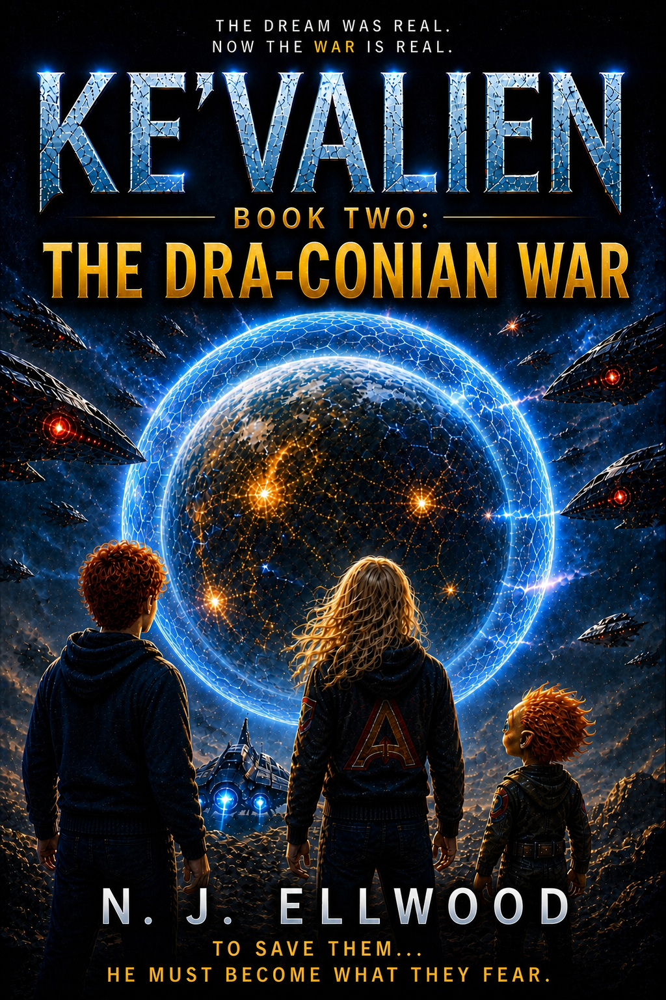

KE'VALIEN TRILOGY · BOOK TWO

Ke'Valien:
The Dra-Conian War
The universe Kevin discovered is now at war.
THE STORY
A Missing Power Cell. A War Between Worlds. A Journey That Becomes Personal.
Kevin has discovered that humanity is not alone. Now he is about to learn how dangerous the wider universe can be.
Kevin's first encounter with alien technology changed everything he believed about his life, his family and the universe beyond Earth.
The universe Kevin has discovered is already at war. On Taconia, the Global Net is beginning to fail, and the shield protecting the planet may soon leave its people exposed to the Dra-Conians.
Kevin cannot save Taconia from behind its shield. He must work with the planet's Debaters, trust unfamiliar allies and travel to the Antarian Cluster in search of the Power Cell before the failing defence becomes a full-scale invasion.
Getting home will require courage, trust and more than one impossible decision. With the Dra-Conian War closing around them, Kevin must protect the people he loves without losing himself in the process.
AT THE HEART OF THE STORY
The Power Cell
It can power extraordinary technology, distort reality and change the fate of entire worlds.

The Power Cell lies at the centre of the war, but its true capabilities are greater than anyone on Earth understands.
In the wrong hands, it is more than a source of energy. It can affect machines, dimensions and even the path events take through time.
For Kevin, recovering it is not simply about preventing a powerful weapon from being used. It is about repairing the damage already done and finding a way to bring everyone home.
TWO BOYS FAR FROM HOME
Kevin and Kieran
At the emotional centre of The Dra-Conian War is the bond that grows between Kevin and Kieran.
Kieran has survived alone in a world he does not understand, holding onto memories of his mum, dad and little sister, Kate. Kevin knows immediately that leaving him behind is not an option.
Their friendship develops through fear, danger and the small moments when they are able to behave like ordinary boys again. They tease each other, argue, laugh at the worst possible times and make promises neither of them is willing to break.
In a story filled with alien technology and impossible worlds, their loyalty to one another becomes one of the most powerful forces of all.
WHY THIS STORY MATTERS
Home Is More Than a Place
The Dra-Conian War expands Kevin's universe, but its heart remains personal. Kevin learns that courage is not the absence of fear. It is staying beside the people who need you, keeping promises when escape would be easier and refusing to leave anyone behind.